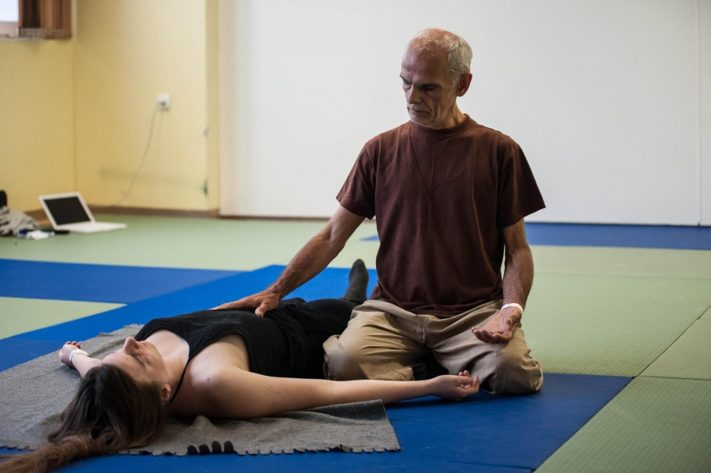

drukuj
drukujENGLISH
Shiatsu
also called acupuncture without needles is the art of touch coming from Japan based on the principles of ancient Chinese medicine.
Modern Shiatsu is a holistic method derived from school Shizuto Masunaga - Zen Shiatsu.
The essence of shiatsu is empathy.
The aim of shiatsu therapy is to harmonize the flow of energy in our body.
Shiatsu massage is effective in a number of ailments, such as
back pain, migraines, depression, digestive disorders, obesity.
Supports the treatment of diseases of civilization.
When you start to practice you'll find that Shiatsu helps not only your customers, but also helps you.
With shiatsu better know your body and correcting its overall condition.
Shiatsu is available to all regardless of age, profession and abilities.
Each of you can learn this simple and effective method!

Andrew Turczynowicz studied macrobiotics at the Kushi Institute in London, Macrobiotic Institute and the International Shiatsu School in Kiental.
Conducts workshops and individual sessions shiatsu shiatsu and consultation in the field of macrobiotics in Poland since 1985.
Teachers: Michio Kushi, Saul Goodman, Shizuko Yamamoto, Vittorio Calogero, Mario Binetti and Denny Waxman.
Founder Polish Macrobiotic Foundation (1994)
WATCH SHIATSU